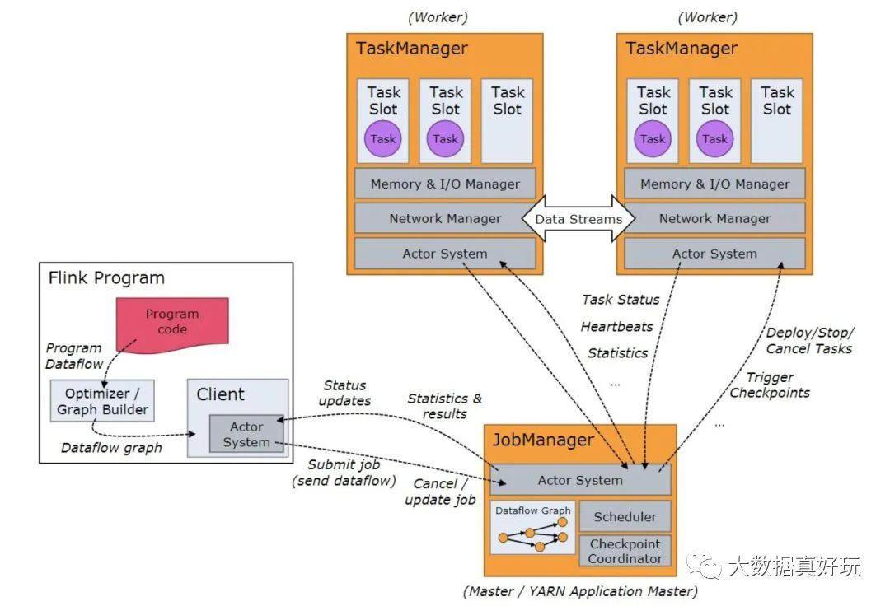
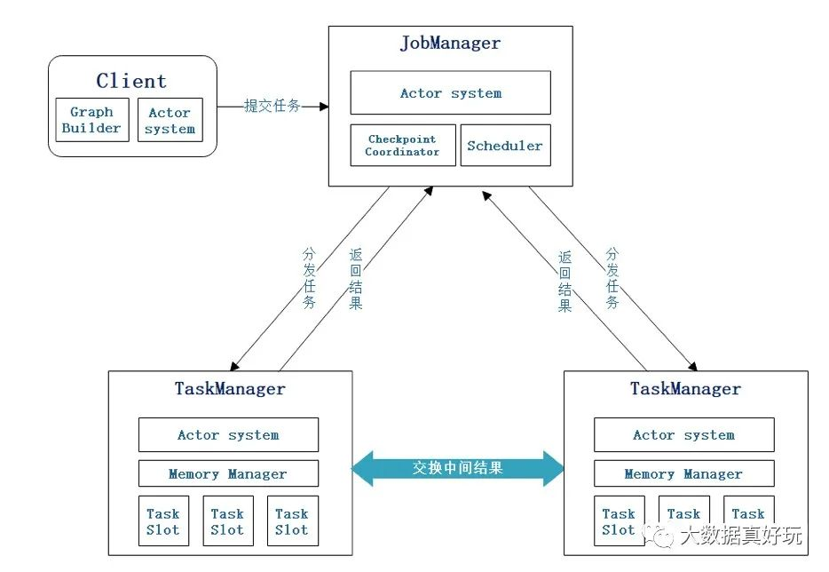
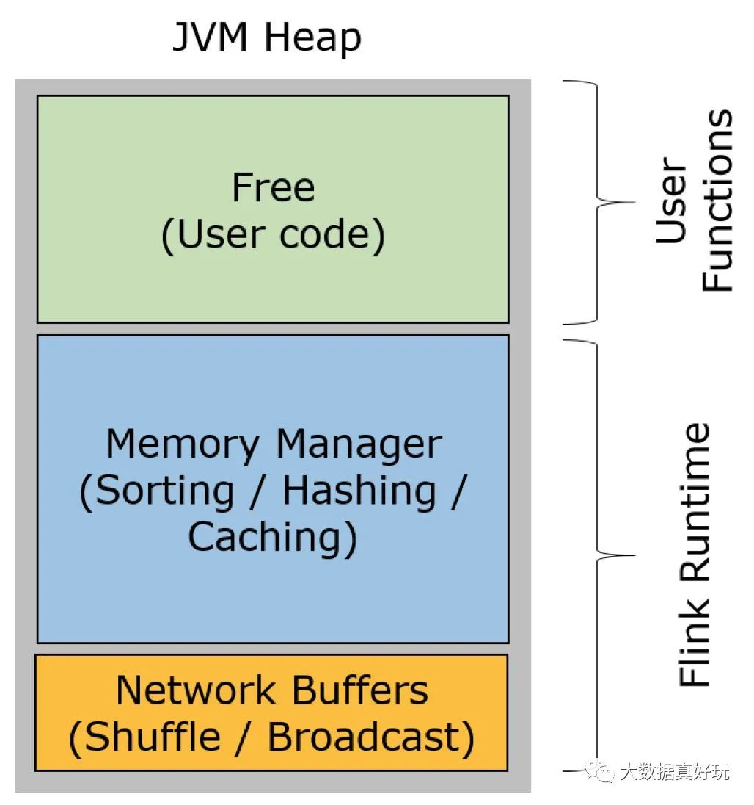

Flink面试通关手册「160题升级版」
转自公众号：大数据真好玩
http://mp.weixin.qq.com/s?__biz=MzI0NjU2NDkzMQ==&mid=2247492015&idx=1&sn=a27be9af8f316bda11287e9309db82f7
点击上方蓝色字体，选择“设为星标”
回复”资源“获取更多惊喜

1、Flink如何保证精确一次性消费
Flink 保证精确一次性消费主要依赖于两种Flink机制
1.Checkpoint机制
2.二阶段提交机制
Checkpoint机制
主要是当Flink开启Checkpoint的时候，会往Source端插入一条barrir，然后这个barrir随着数据流向一直流动，当流入到一个算子的时候，这个算子就开始制作checkpoint，制作的是从barrir来到之前的时候当前算子的状态，将状态写入状态后端当中。然后将barrir往下流动，当流动到keyby 或者shuffle算子的时候，例如当一个算子的数据，依赖于多个流的时候，这个时候会有barrir对齐，也就是当所有的barrir都来到这个算子的时候进行制作checkpoint，依次进行流动，当流动到sink算子的时候，并且sink算子也制作完成checkpoint会向jobmanager 报告 checkpoint n 制作完成。
二阶段提交机制
Flink 提供了CheckpointedFunction与CheckpointListener这样两个接口，CheckpointedFunction中有snapshotState方法，每次checkpoint触发执行方法，通常会将缓存数据放入状态中，可以理解为一个hook，这个方法里面可以实现预提交，CheckpointListyener中有notifyCheckpointComplete方法，checkpoint完成之后的通知方法，这里可以做一些额外的操作。例如FLinkKafkaConumerBase使用这个来完成Kafka offset的提交，在这个方法里面可以实现提交操作。在2PC中提到如果对应流程例如某个checkpoint失败的话，那么checkpoint就会回滚，不会影响数据一致性，那么如果在通知checkpoint成功的之后失败了，那么就会在initalizeSate方法中完成事务的提交，这样可以保证数据的一致性。最主要是根据checkpoint的状态文件来判断的。
2、flink和spark区别
flink是一个类似spark的“开源技术栈”，因为它也提供了批处理，流式计算，图计算，交互式查询，机器学习等。flink也是内存计算，比较类似spark，但是不一样的是，spark的计算模型基于RDD，将流式计算看成是特殊的批处理，他的DStream其实还是RDD。而flink吧批处理当成是特殊的流式计算，但是批处理和流式计算的层的引擎是两个，抽象了DataSet和DataStream。flink在性能上也表现的很好，流式计算延迟比spark少，能做到真正的流式计算，而spark只能是准流式计算。而且在批处理上，当迭代次数变多，flink的速度比spark还要快，所以如果flink早一点出来，或许比现在的Spark更火。
3、Flink的状态可以用来做什么？
Flink状态主要有两种使用方式：
1.checkpoint的数据恢复
2.逻辑计算
4、Flink的waterMark机制，Flink watermark传递机制
Flink 中的watermark机制是用来处理乱序的，flink的时间必须是event time ，有一个简单的例子就是，假如窗口是5秒，watermark是2秒，那么 总共就是7秒，这个时候什么时候会触发计算呢，假设数据初始时间是1000，那么等到6999的时候会触发5999窗口的计算，那么下一个就是13999的时候触发10999的窗口
其实这个就是watermark的机制，在多并行度中，例如在kafka中会所有的分区都达到才会触发窗口
5、Flink的时间语义
Event Time 事件产生的时间
Ingestion time 事件进入Flink的时间
processing time 事件进入算子的时间
6、Flink window join
1.window join，即按照指定的字段和滚动滑动窗口和会话窗口进行 inner join
2.是coGoup 其实就是left join 和 right join
3.interval join 也就是 在窗口中进行join 有一些问题，因为有些数据是真的会后到的，时间还很长，那么这个时候就有了interval join但是必须要是事件时间，并且还要指定watermark和水位以及获取事件时间戳。并且要设置 偏移区间，因为join 也不能一直等的。
7、flink窗口函数有哪些
Tumbing window
Silding window
Session window
Count winodw
8、keyedProcessFunction 是如何工作的。假如是event time的话
keyedProcessFunction 是有一个ontime 操作的，假如是 event时间的时候 那么 调用的时间就是查看，event的watermark 是否大于 trigger time 的时间，如果大于则进行计算，不大于就等着，如果是kafka的话，那么默认是分区键最小的时间来进行触发。
9、flink是怎么处理离线数据的例如和离线数据的关联？
1.async io
2.broadcast
3.async io + cache
4.open方法中读取，然后定时线程刷新，缓存更新是先删除，之后再来一条之后再负责写入缓存
10、flink支持的数据类型
DataSet Api 和 DataStream Api、Table Api
11、Flink出现数据倾斜怎么办
Flink数据倾斜如何查看
在flink的web ui中可以看到数据倾斜的情况，就是每个subtask处理的数据量差距很大，例如有的只有一M 有的100M 这就是严重的数据倾斜了。
KafkaSource端发生的数据倾斜
例如上游kafka发送的时候指定的key出现了数据热点问题，那么就在接入之后，做一个负载均衡（前提下游不是keyby）。
聚合类算子数据倾斜
预聚合加全局聚合
12、flink 维表关联怎么做的
1.async io
2.broadcast
3.async io + cache
4.open方法中读取，然后定时线程刷新，缓存更新是先删除，之后再来一条之后再负责写入缓存
13、Flink checkpoint的超时问题 如何解决。
1.是否网络问题
2.是否是barrir问题
3.查看webui，是否有数据倾斜
4.有数据倾斜的话，那么解决数据倾斜后，会有改善，
14、flinkTopN与离线的TopN的区别
topn 无论是在离线还是在实时计算中都是比较常见的功能，不同于离线计算中的topn，实时数据是持续不断的，这样就给topn的计算带来很大的困难，因为要持续在内存中维持一个topn的数据结构，当有新数据来的时候，更新这个数据结构
15、sparkstreaming 和flink 里checkpoint的区别
sparkstreaming 的checkpoint会导致数据重复消费
但是flink的 checkpoint可以 保证精确一次性，同时可以进行增量，快速的checkpoint的，有三个状态后端，memery、rocksdb、hdfs
16、简单介绍一下cep状态编程
Complex Event Processing（CEP）：
FLink Cep 是在FLink中实现的复杂时间处理库，CEP允许在无休止的时间流中检测事件模式，让我们有机会掌握数据中重要的部分，一个或多个由简单事件构成的时间流通过一定的规则匹配，然后输出用户想得到的数据，也就是满足规则的复杂事件。
17、 Flink cep连续事件的可选项有什么
18、如何通过flink的CEP来实现支付延迟提醒
19、Flink cep 你用过哪些业务场景
20、cep底层如何工作
21、cep怎么老化
22、cep性能调优
23、Flink的背压，介绍一下Flink的反压，你们是如何监控和发现的呢。
Flink 没有使用任何复杂的机制来解决反压问题，Flink 在数据传输过程中使用了分布式阻塞队列。我们知道在一个阻塞队列中，当队列满了以后发送者会被天然阻塞住，这种阻塞功能相当于给这个阻塞队列提供了反压的能力。
当你的任务出现反压时，如果你的上游是类似 Kafka 的消息系统，很明显的表现就是消费速度变慢，Kafka 消息出现堆积。
如果你的业务对数据延迟要求并不高，那么反压其实并没有很大的影响。但是对于规模很大的集群中的大作业，反压会造成严重的“并发症”。首先任务状态会变得很大，因为数据大规模堆积在系统中，这些暂时不被处理的数据同样会被放到“状态”中。另外，Flink 会因为数据堆积和处理速度变慢导致 checkpoint 超时，而 checkpoint 是 Flink 保证数据一致性的关键所在，最终会导致数据的不一致发生。
Flink Web UI
Flink 的后台页面是我们发现反压问题的第一选择。Flink 的后台页面可以直观、清晰地看到当前作业的运行状态。
Web UI，需要注意的是，只有用户在访问点击某一个作业时，才会触发反压状态的计算。在默认的设置下，Flink的TaskManager会每隔50ms触发一次反压状态监测，共监测100次，并将计算结果反馈给JobManager，最后由JobManager进行反压比例的计算，然后进行展示。
在生产环境中Flink任务有反压有三种OK、LOW、HIGH
OK正常
LOW一般
HIGH高负载
24、Flink的CBO，逻辑执行计划和物理执行计划
Flink的优化执行其实是借鉴的数据库的优化器来生成的执行计划。
CBO，成本优化器，代价最小的执行计划就是最好的执行计划。传统的数据库，成本优化器做出最优化的执行计划是依据统计信息来计算的。Flink 的成本优化器也一样。Flink 在提供最终执行前，优化每个查询的执行逻辑和物理执行计划。这些优化工作是交给底层来完成的。根据查询成本执行进一步的优化，从而产生潜在的不同决策：如何排序连接，执行哪种类型的连接，并行度等等。
25、Flink中数据聚合，不使用窗口怎么实现聚合
valueState 用于保存单个值
ListState 用于保存list元素
MapState 用于保存一组键值对
ReducingState 提供了和ListState相同的方法，返回一个ReducingFunction聚合后的值。
AggregatingState和 ReducingState类似，返回一个AggregatingState内部聚合后的值
26、Flink中state有哪几种存储方式
Memery、RocksDB、HDFS
27、Flink 异常数据怎么处理
异常数据在我们的场景中，一般分为缺失字段和异常值数据。
异常值：例如宝宝的年龄的数据，例如对于母婴行业来讲，一个宝宝的年龄是一个至关重要的数据，可以说是最重要的，因为宝宝大于3岁几乎就不会在母婴上面购买物品。像我们的有当日、未知、以及很久的时间。这样都属于异常字段，这些数据我们会展示出来给店长和区域经理看，让他们知道多少个年龄是不准的。如果要处理的话，可以根据他购买的时间来进行实时矫正，例如孕妇服装、奶粉的段位、纸尿裤的大小，以及奶嘴啊一些能够区分年龄段的来进行处理。我们并没有实时处理这些数据，我们会有一个底层的策略任务夜维去跑，一个星期跑一次。
缺失字段：例如有的字段真的缺失的很厉害，能修补就修补。不能修补就放弃，就像上家公司中的新闻推荐过滤器。
28、Flink 监控你们怎么做的
1.我们监控了Flink的任务是否停止
2.我们监控了Flink的Kafka的LAG
3.我们会进行实时数据对账，例如销售额。
29、Flink 有数据丢失的可能吗
Flink有三种数据消费语义：
1.At Most Once 最多消费一次 发生故障有可能丢失
2.At Least Once 最少一次 发生故障有可能重复
3.Exactly-Once 精确一次 如果产生故障，也能保证数据不丢失不重复。
flink 新版本已经不提供 At-Most-Once 语义。
30、Flink interval join 你能简单的写一写吗
DataStream<T> keyed1 = ds1.keyBy(o -> o.getString("key"))DataStream<T> keyed2 = ds2.keyBy(o -> o.getString("key"))//右边时间戳-5s<=左边流时间戳<=右边时间戳-1skeyed1.intervalJoin(keyed2).between(Time.milliseconds(-5), Time.milliseconds(5))
31、Flink 提交的时候 并行度如何制定，以及资源如何配置
并行度根据kafka topic的并行度，一个并行度3个G
32、Flink的boardcast join 的原理是什么
利用 broadcast State 将维度数据流广播到下游所有 task 中。这个 broadcast 的流可以与我们的事件流进行 connect，然后在后续的 process 算子中进行关联操作即可。
33、flink的source端断了，比如kafka出故障，没有数据发过来，怎么处理？
会有报警，监控的kafka偏移量也就是LAG。
34、flink有什么常用的流的API?
window join 啊 cogroup 啊 map flatmap，async io 等
35、flink的水位线，你了解吗，能简单介绍一下吗
Flink 的watermark是一种延迟触发的机制。
一般watermark是和window结合来进行处理乱序数据的，Watermark最根本就是一个时间机制，例如我设置最大乱序时间为2s，窗口时间为5秒，那么就是当事件时间大于7s的时候会触发窗口。当然假如有数据分区的情况下，例如kafka中接入watermake的话，那么watermake是会流动的，取的是所有分区中最小的watermake进行流动，因为只有最小的能够保证，之前的数据都已经来到了，可以触发计算了。
36、Flink怎么维护Checkpoint？在HDFS上存储的话会有小文件吗
默认情况下，如果设置了Checkpoint选项，Flink只保留最近成功生成的1个Checkpoint。当Flink程序失败时，可以从最近的这个Checkpoint来进行恢复。但是，如果我们希望保留多个Checkpoint，并能够根据实际需要选择其中一个进行恢复，这样会更加灵活。Flink支持保留多个Checkpoint，需要在Flink的配置文件conf/flink-conf.yaml中，添加如下配置指定最多需要保存Checkpoint的个数。
关于小文件问题可以参考代达罗斯之殇-大数据领域小文件问题解决攻略
37、Spark和Flink的序列化，有什么区别吗？
Spark 默认使用的是 Java序列化机制，同时还有优化的机制，也就是kryo
Flink是自己实现的序列化机制，也就是TypeInformation
38、Flink是怎么处理迟到数据的？但是实际开发中不能有数据迟到，怎么做？
Flink 的watermark是一种延迟触发的机制。
一般watermark是和window结合来进行处理乱序数据的，Watermark最根本就是一个时间机制，例如我设置最大乱序时间为2s，窗口时间为5秒，那么就是当事件时间大于7s的时候会触发窗口。当然假如有数据分区的情况下，例如kafka中接入watermake的话，那么watermake是会流动的，取的是所有分区中最小的watermake进行流动，因为只有最小的能够保证，之前的数据都已经来到了，可以触发计算了。
39、画出flink执行时的流程图。
40、Flink分区分配策略
41、Flink关闭后状态端数据恢复得慢怎么办？
42、了解flink的savepoint吗？讲一下savepoint和checkpoint的不同和各有什么优势
43、flink的状态后端机制
Flink的状态后端是Flink在做checkpoint的时候将状态快照持久化，有三种状态后端 Memery、HDFS、RocksDB
44、flink中滑动窗口和滚动窗口的区别，实际应用的窗口是哪种？用的是窗口长度和滑动步长是多少？
45、用flink能替代spark的批处理功能吗
Flink 未来的目标是批处理和流处理一体化，因为批处理的数据集你可以理解为是一个有限的数据流。Flink 在批出理方面，尤其是在今年 Flink 1.9 Release 之后，合入大量在 Hive 方面的功能，你可以使用 Flink SQL 来读取 Hive 中的元数据和数据集，并且使用 Flink SQL 对其进行逻辑加工，不过目前 Flink 在批处理方面的性能，还是干不过 Spark的。
目前看来，Flink 在批处理方面还有很多内容要做，当然，如果是实时计算引擎的引入，Flink 当然是首选。
46、flink计算的UV你们是如何设置状态后端保存数据
可以使用布隆过滤器。
47、sparkstreaming和flink在执行任务上有啥区别，不是简单的流处理和微批，sparkstreaming提交任务是分解成stage，flink是转换graph，有啥区别？
48、flink把streamgraph转化成jobGraph是在哪个阶段？
49、Flink中的watermark除了处理乱序数据还有其他作用吗？
还有kafka数据顺序消费的处理。
50、flink你一般设置水位线设置多少
我们之前设置的水位线是6s
52、Flink任务提交流程
Flink任务提交后，Client向HDFS上传Flink的jar包和配置，之后向Yarn ResourceManager提交任务，ResourceManager分配Container资源并通知对应的NodeManager启动 ApplicationMaster，ApplicationMaster启动后加载Flink的jar包和配置构建环境，然后启动JobManager；之后Application Master向ResourceManager申请资源启动TaskManager ，ResourceManager分配Container资源后，由ApplicationMaster通知资源所在的节点的NodeManager启动TaskManager，NodeManager加载Flink的Jar包和配置构建环境并启动TaskManager，TaskManager启动向JobManager发送心跳，并等待JobManager向其分配任务。
53、Flink技术架构图
54、flink如何实现在指定时间进行计算
55、手写Flink topN
57、Flink的Join算子有哪些
一般join是发生在window上面的:
1.window join，即按照指定的字段和滚动滑动窗口和会话窗口进行 inner join
2.是coGoup 其实就是left join 和 right join
3.interval join 也就是 在窗口中进行join 有一些问题，因为有些数据是真的会后到的，时间还很长，那么这个时候就有了interval join但是必须要是事件时间，并且还要指定watermark和水位以及获取事件时间戳。并且要设置 偏移区间，因为join 也不能一直等的。
58、Flink1.10 有什么新特性吗？
内存管理及配置优化
Flink 目前的 TaskExecutor 内存模型存在着一些缺陷，导致优化资源利用率比较困难，例如：
流和批处理内存占用的配置模型不同
流处理中的 RocksDB state backend 需要依赖用户进行复杂的配置
为了让内存配置变的对于用户更加清晰、直观，Flink 1.10 对 TaskExecutor 的内存模型和配置逻辑进行了较大的改动 （FLIP-49 [7]）。这些改动使得 Flink 能够更好地适配所有部署环境（例如 Kubernetes, Yarn, Mesos），让用户能够更加严格的控制其内存开销。
Managed 内存扩展
Managed 内存的范围有所扩展，还涵盖了 RocksDB state backend 使用的内存。尽管批处理作业既可以使用堆内内存也可以使用堆外内存，使用 RocksDB state backend 的流处理作业却只能利用堆外内存。因此为了让用户执行流和批处理作业时无需更改集群的配置，我们规定从现在起 managed 内存只能在堆外。
简化 RocksDB 配置
此前，配置像 RocksDB 这样的堆外 state backend 需要进行大量的手动调试，例如减小 JVM 堆空间、设置 Flink 使用堆外内存等。现在，Flink 的开箱配置即可支持这一切，且只需要简单地改变 managed 内存的大小即可调整 RocksDB state backend 的内存预算。
另一个重要的优化是，Flink 现在可以限制 RocksDB 的 native 内存占用，以避免超过总的内存预算—这对于 Kubernetes 等容器化部署环境尤为重要。
统一的作业提交逻辑
在此之前，提交作业是由执行环境负责的，且与不同的部署目标（例如 Yarn, Kubernetes, Mesos）紧密相关。这导致用户需要针对不同环境保留多套配置，增加了管理的成本。
在 Flink 1.10 中，作业提交逻辑被抽象到了通用的 Executor 接口。新增加的 ExecutorCLI （引入了为任意执行目标指定配置参数的统一方法。此外，随着引入 JobClient负责获取 JobExecutionResult，获取作业执行结果的逻辑也得以与作业提交解耦。
原生 Kubernetes 集成（Beta）
对于想要在容器化环境中尝试 Flink 的用户来说，想要在 Kubernetes 上部署和管理一个 Flink standalone 集群，首先需要对容器、算子及像 kubectl 这样的环境工具有所了解。
在 Flink 1.10 中，我们推出了初步的支持 session 模式的主动 Kubernetes 集成（FLINK-9953）。其中，“主动”指 Flink ResourceManager (K8sResMngr) 原生地与 Kubernetes 通信，像 Flink 在 Yarn 和 Mesos 上一样按需申请 pod。用户可以利用 namespace，在多租户环境中以较少的资源开销启动 Flink。这需要用户提前配置好 RBAC 角色和有足够权限的服务账号。
Table API/SQL: 生产可用的 Hive 集成
Flink 1.9 推出了预览版的 Hive 集成。该版本允许用户使用 SQL DDL 将 Flink 特有的元数据持久化到 Hive Metastore、调用 Hive 中定义的 UDF 以及读、写 Hive 中的表。Flink 1.10 进一步开发和完善了这一特性，带来了全面兼容 Hive 主要版本的生产可用的 Hive 集成。
Batch SQL 原生分区支持
此前，Flink 只支持写入未分区的 Hive 表。在 Flink 1.10 中，Flink SQL 扩展支持了 INSERT OVERWRITE 和 PARTITION 的语法（FLIP-63 ），允许用户写入 Hive 中的静态和动态分区。
写入静态分区
INSERT { INTO | OVERWRITE } TABLE tablename1 [PARTITION (partcol1=val1, partcol2=val2 ...)] select_statement1 FROM from_statement;
写入动态分区
INSERT { INTO | OVERWRITE } TABLE tablename1 select_statement1 FROM from_statement;
对分区表的全面支持，使得用户在读取数据时能够受益于分区剪枝，减少了需要扫描的数据量，从而大幅提升了这些操作的性能。
另外，除了分区剪枝，Flink 1.10 的 Hive 集成还引入了许多数据读取方面的优化，例如：
投影下推：Flink 采用了投影下推技术，通过在扫描表时忽略不必要的域，最小化 Flink 和 Hive 表之间的数据传输量。这一优化在表的列数较多时尤为有效。
LIMIT 下推：对于包含 LIMIT 语句的查询，Flink 在所有可能的地方限制返回的数据条数，以降低通过网络传输的数据量。
读取数据时的 ORC 向量化：为了提高读取 ORC 文件的性能，对于 Hive 2.0.0 及以上版本以及非复合数据类型的列，Flink 现在默认使用原生的 ORC 向量化读取器。
59、Flink的重启策略
固定延迟重启策略
固定延迟重启策略是尝试给定次数重新启动作业。如果超过最大尝试次数，则作业失败。在两次连续重启尝试之间，会有一个固定的延迟等待时间。
故障率重启策略
故障率重启策略在故障后重新作业，当设置的故障率（failure rate）超过每个时间间隔的故障时，作业最终失败。在两次连续重启尝试之间，重启策略延迟等待一段时间。
无重启策略
作业直接失败，不尝试重启。
后备重启策略
使用群集定义的重新启动策略。这对于启用检查点的流式传输程序很有帮助。默认情况下，如果没有定义其他重启策略，则选择固定延迟重启策略。
60、Flink什么时候用aggregate()或者process()
aggregate：增量聚合
process：全量聚合
当计算累加操作时候可以使用aggregate操作。
当计算窗口内全量数据的时候使用process，例如排序等操作。
61、Flink优化 你了解多少
62、Flink内存溢出怎么办
63、说说Flink中的keyState包含哪些数据结构
64、Flink shardGroup的概念
65、简单介绍一下Flink
Flink核心是一个流式的数据流执行引擎，其针对数据流的分布式计算提供了数据分布、数据通信以及容错机制等功能。基于流执行引擎，Flink提供了诸多更高抽象层的API以便用户编写分布式任务：
DataSet API， 对静态数据进行批处理操作，将静态数据抽象成分布式的数据集，用户可以方便地使用Flink提供的各种操作符对分布式数据集进行处理，支持Java、Scala和Python。
DataStream API，对数据流进行流处理操作，将流式的数据抽象成分布式的数据流，用户可以方便地对分布式数据流进行各种操作，支持Java和Scala。
Table API，对结构化数据进行查询操作，将结构化数据抽象成关系表，并通过类SQL的DSL对关系表进行各种查询操作，支持Java和Scala。
此外，Flink还针对特定的应用领域提供了领域库，例如：
Flink ML，Flink的机器学习库，提供了机器学习Pipelines API并实现了多种机器学习算法。Gelly，Flink的图计算库，提供了图计算的相关API及多种图计算算法实现。
66、Flink相比Spark Streaming有什么区别？
这个问题问的很大，分几个方面回答：
架构模型上：Spark Streaming 的task运行依赖driver 和 executor和worker，当然driver和excutor还依赖于集群管理器Standalone或者yarn等。而Flink运行时主要是JobManager、TaskManage和TaskSlot。另外一个最核心的区别是：Spark Streaming 是微批处理，运行的时候需要指定批处理的时间，每次运行 job 时处理一个批次的数据；Flink 是基于事件驱动的，事件可以理解为消息。事件驱动的应用程序是一种状态应用程序，它会从一个或者多个流中注入事件，通过触发计算更新状态，或外部动作对注入的事件作出反应。

任务调度上：Spark Streaming的调度分为构建 DGA 图，划分 stage，生成 taskset，调度 task等步骤而Flink首先会生成 StreamGraph，接着生成 JobGraph，然后将 jobGraph 提交给 Jobmanager 由它完成 jobGraph 到 ExecutionGraph 的转变，最后由 jobManager 调度执行。

时间机制上：flink 支持三种时间机制事件时间，注入时间，处理时间，同时支持 watermark 机制处理滞后数据。Spark Streaming 只支持处理时间，Structured streaming则支持了事件时间和watermark机制。
容错机制上：二者保证exactly-once的方式不同。spark streaming 通过保存offset和事务的方式；Flink 则使用两阶段提交协议来解决这个问题。
67、Flink的组件栈是怎么样的
Flink是一个分层架构的系统，每一层所包含的组件都提供了特定的抽象，用来服务于上层组件。Flink分层的组件栈如下图所示：
Deployment层
该层主要涉及了Flink的部署模式，Flink支持多种部署模式：本地、集群（Standalone/YARN）、云（GCE/EC2）。
Runtime层
Runtime层提供了支持Flink计算的全部核心实现，比如：支持分布式Stream处理、JobGraph到ExecutionGraph的映射、调度等等，为上层API层提供基础服务。
API层
API层主要实现了面向无界Stream的流处理和面向Batch的批处理API，其中面向流处理对应DataStream API，面向批处理对应DataSet API。
Libraries层
该层也可以称为Flink应用框架层，根据API层的划分，在API层之上构建的满足特定应用的实现计算框架，也分别对应于面向流处理和面向批处理两类。面向流处理支持：CEP（复杂事件处理）、基于SQL-like的操作（基于Table的关系操作）；面向批处理支持：FlinkML（机器学习库）、Gelly（图处理）。
68、Flink的基础编程模型了解吗？
Flink 程序的基础构建单元是流（streams）与转换（transformations）。DataSet API 中使用的数据集也是一种流。数据流（stream）就是一组永远不会停止的数据记录流，而转换（transformation）是将一个或多个流作为输入，并生成一个或多个输出流的操作。
执行时，Flink程序映射到 streaming dataflows，由流（streams）和转换操作（transformation operators）组成。每个 dataflow 从一个或多个源（source）开始，在一个或多个接收器（sink）中结束。
详细参考：
https://www.cnblogs.com/cxhfuujust/p/10925843.html
69、说说Flink架构中的角色和作用？

JobManager
JobManager是Flink系统的协调者，它负责接收Flink Job，调度组成Job的多个Task的执行。同时，JobManager还负责收集Job的状态信息，并管理Flink集群中从节点TaskManager。
TaskManager
TaskManager也是一个Actor，它是实际负责执行计算的Worker，在其上执行Flink Job的一组Task。每个TaskManager负责管理其所在节点上的资源信息，如内存、磁盘、网络，在启动的时候将资源的状态向JobManager汇报。
Client
当用户提交一个Flink程序时，会首先创建一个Client，该Client首先会对用户提交的Flink程序进行预处理，并提交到Flink集群中处理，所以Client需要从用户提交的Flink程序配置中获取JobManager的地址，并建立到JobManager的连接，将Flink Job提交给JobManager。Client会将用户提交的Flink程序组装一个JobGraph， 并且是以JobGraph的形式提交的。一个JobGraph是一个Flink Dataflow，它由多个JobVertex组成的DAG。其中，一个JobGraph包含了一个Flink程序的如下信息：JobID、Job名称、配置信息、一组JobVertex等。
70、说说Flink中常用的算子？用过哪些？
举一些常用的例子：
flink中提供的大量的算子，下面将介绍常用的算子操作方式：
map
DataStream --> DataStream：输入一个参数产生一个参数，map的功能是对输入的参数进行转换操作。
flatMap
DataStream --> DataStream：输入一个参数，产生0、1或者多个输出，这个多用于拆分操作
filter
DataStream --> DataStream：结算每个元素的布尔值，并返回为true的元素
keyBy
DataSteam --> DataStream：逻辑地将一个流拆分成不相交的分区，每个分区包含具有相同key的元素，在内部以hash的形式实现的。以key来分组。
注意：以下类型无法作为key
POJO类，且没有实现hashCode函数
任意形式的数组类型
reduce
KeyedStream --> DataStream：滚动合并操作，合并当前元素和上一次合并的元素结果。
fold
KeyedStream --> DataStream：用一个初始的一个值，与其每个元素进行滚动合并操作。
aggregation
KeyedStream --> DataStream：分组流数据的滚动聚合操作：min和minBy的区别是min返回的是一个最小值，而minBy返回的是其字段中包含的最小值的元素（同样元原理适用于max和maxBy）
window
KeyedStream --> DataStream：windows是在一个分区的KeyedStreams中定义的，windows根据某些特性将每个key的数据进行分组（例如：在5s内到达的数据）。
windowAll
DataStream --> AllWindowedStream：Windows可以在一个常规的DataStream中定义，Windows根据某些特性对所有的流（例如：5s内到达的数据）。
注意：这个操作在很多情况下都不是并行操作的，所有的记录都会聚集到一个windowAll操作的任务中
window apply
WindowedStream --> DataStream
AllWindowedStream --> DataStream：将一个通用的函数作为一个整体传递给window。
window reduce
WindowedStream --> DataStream：给窗口赋予一个reduce的功能，并返回一个reduce的结果。
window fold
WindowedStream --> DataStream：给窗口赋予一个fold的功能，并返回一个fold后的结果。
aggregation on windows
WindowedStream --> DataStream：对window的元素做聚合操作，min和minBy的区别是min返回的是最小值，而minBy返回的是包含最小值字段的元素。（同样原理适用于max和maxBy）
union
DataStream --> DataStream：对两个或两个以上的DataStream做union操作，产生一个包含所有的DataStream元素的新DataStream。
注意：如果将一个DataStream和自己做union操作，在新的DataStream中，将看到每个元素重复两次
window join
DataStream，DataStream --> DataStream：根据给定的key和window对两个DataStream做join操作
window coGroup
DataStream，DataStream --> DataStream：根据一个给定的key和window对两个DataStream做CoGroups操作。
connect
DataStream，DataStream --> ConnectedStreams：连接两个保持它们类型的数据流。
coMap、coFlatMap
ConnectedStreams --> DataStream：作用于connected数据流上，功能与map和flatMap一样。
split
DataStream --> SplitStream：根据某些特征把一个DataStream拆分成两个或多个DataStream
select
SplitStream --> DataStream：从一个SplitStream中获取一个或多个DataStream
iterate
DataStream --> IterativeStream --> DataStream：在流程中创建一个反馈循环，将一个操作的输出重定向到之前的操作，这对于定义持续更新模型的算法来说很有意义的。
extract timestamps
DataStream --> DataStream：提取记录中的时间戳来跟需要事件时间的window一起发挥作用。
参考：
https://ci.apache.org/projects/flink/flink-docs-release-1.9/dev/batch/
71、Flink中的分区策略有哪几种？
GlobalPartitioner: DataStream => DataStream
GlobalPartitioner,GLOBAL分区。将记录输出到下游Operator的第一个实例。
ShufflePartitioner: DataStream => DataStream
ShufflePartitioner，SHUFFLE分区。将记录随机输出到下游Operator的每个实例。
RebalancePartitioner: DataStream => DataStream
RebalancePartitioner,REBALANCE分区。将记录以循环的方式输出到下游Operator的每个实例。
RescalePartitioner: DataStream => DataStream
RescalePartitioner,RESCALE分区。基于上下游Operator的并行度，将记录以循环的方式输出到下游Operator的每个实例。举例: 上游并行度是2，下游是4，则上游一个并行度以循环的方式将记录输出到下游的两个并行度上;上游另一个并行度以循环的方式将记录输出到下游另两个并行度上。若上游并行度是4，下游并行度是2，则上游两个并行度将记录输出到下游一个并行度上；上游另两个并行度将记录输出到下游另一个并行度上。
BroadcastPartitioner: DataStream => DataStream
BroadcastPartitioner,BROADCAST分区。广播分区将上游数据集输出到下游Operator的每个实例中。适合于大数据集Join小数据集的场景。
ForwardPartitioner
ForwardPartitioner,FORWARD分区。将记录输出到下游本地的operator实例
ForwardPartitioner分区器要求上下游算子并行度一样。上下游Operator同属一个SubTasks。
KeyGroupStreamPartitioner(HASH方式):
KeyGroupStreamPartitioner,HASH分区。将记录按Key的Hash值输出到下游Operator实例。
CustomPartitionerWrapper
CustomPartitionerWrapper,CUSTOM分区。通过Partitioner实例的partition方法(自定义的)将记录输出到下游。
72、 Flink的并行度有了解吗？Flink中设置并行度需要注意什么？
Flink程序由多个任务（Source、Transformation、Sink）组成。任务被分成多个并行实例来执行，每个并行实例处理任务的输入数据的子集。任务的并行实例的数量称之为并行度。Flink中人物的并行度可以从多个不同层面设置：
操作算子层面(Operator Level)、执行环境层面(Execution Environment Level)、客户端层面(Client Level)、系统层面(System Level)。
Flink可以设置好几个level的parallelism，其中包括Operator Level、Execution Environment Level、Client Level、System Level
在flink-conf.yaml中通过parallelism.default配置项给所有execution environments指定系统级的默认parallelism；在ExecutionEnvironment里头可以通过setParallelism来给operators、data sources、data sinks设置默认的parallelism；如果operators、data sources、data sinks自己有设置parallelism则会覆盖ExecutionEnvironment设置的parallelism。
73、Flink支持哪几种重启策略？分别如何配置？
重启策略种类：
固定延迟重启策略（Fixed Delay Restart Strategy）
故障率重启策略（Failure Rate Restart Strategy）
无重启策略（No Restart Strategy） Fallback重启策略（Fallback Restart Strategy）
详细参考：
https://www.jianshu.com/p/22409ccc7905
74、Flink的分布式缓存有什么作用？如何使用？
Flink提供了一个分布式缓存，类似于hadoop，可以使用户在并行函数中很方便的读取本地文件，并把它放在taskmanager节点中，防止task重复拉取。
此缓存的工作机制如下：程序注册一个文件或者目录(本地或者远程文件系统，例如hdfs或者s3)，通过ExecutionEnvironment注册缓存文件并为它起一个名称。
当程序执行，Flink自动将文件或者目录复制到所有taskmanager节点的本地文件系统，仅会执行一次。用户可以通过这个指定的名称查找文件或者目录，然后从taskmanager节点的本地文件系统访问它。
详细参考：
https://www.jianshu.com/p/7770f9aec75d
75、Flink中的广播变量，使用广播变量需要注意什么事项？
在Flink中，同一个算子可能存在若干个不同的并行实例，计算过程可能不在同一个Slot中进行，不同算子之间更是如此，因此不同算子的计算数据之间不能像Java数组之间一样互相访问，而广播变量Broadcast便是解决这种情况的。
我们可以把广播变量理解为是一个公共的共享变量，我们可以把一个dataset 数据集广播出去，然后不同的task在节点上都能够获取到，这个数据在每个节点上只会存在一份。
https://www.jianshu.com/p/3b6698ec10d8
76、Flink中对窗口的支持包括哪几种？说说他们的使用场景
详细参考：
https://www.jianshu.com/p/0ad104778bcd
77、Flink 中的 State Backends是什么？有什么作用？分成哪几类？说说他们各自的优缺点？
Flink流计算中可能有各种方式来保存状态：
窗口操作
使用了KV操作的函数
继承了CheckpointedFunction的函数
当开始做checkpointing的时候，状态会被持久化到checkpoints里来规避数据丢失和状态恢复。选择的状态存储策略不同，会导致状态持久化如何和checkpoints交互。
Flink内部提供了这些状态后端:
MemoryStateBackend
FsStateBackend
RocksDBStateBackend
如果没有其他配置，系统将使用MemoryStateBackend。
详细参考：
https://www.cnblogs.com/029zz010buct/p/9403283.html
78、Flink中的时间种类有哪些？各自介绍一下？
Flink中的时间与现实世界中的时间是不一致的，在flink中被划分为事件时间，摄入时间，处理时间三种。
如果以EventTime为基准来定义时间窗口将形成EventTimeWindow,要求消息本身就应该携带EventTime
如果以IngesingtTime为基准来定义时间窗口将形成IngestingTimeWindow,以source的systemTime为准。
如果以ProcessingTime基准来定义时间窗口将形成ProcessingTimeWindow，以operator的systemTime为准。
参考：
https://www.jianshu.com/p/0a135391ff41
79、WaterMark是什么？是用来解决什么问题？如何生成水印？水印的原理是什么？
Watermark是Apache Flink为了处理EventTime 窗口计算提出的一种机制,本质上也是一种时间戳。
watermark是用于处理乱序事件的，处理乱序事件通常用watermark机制结合window来实现。
详细参考：
https://www.jianshu.com/p/1c2542f11da0
80、Flink的table和SQL熟悉吗？Table API和SQL中TableEnvironment这个类有什么作用？
TableEnvironment是Table API和SQL集成的核心概念。它负责：
在内部catalog中注册表
注册外部catalog
执行SQL查询
注册用户定义（标量，表或聚合）函数
将DataStream或DataSet转换为表
持有对ExecutionEnvironment或StreamExecutionEnvironment的引用
81、Flink如何实现SQL解析的呢？
StreamSQL API的执行原理如下：
1.用户使用对外提供Stream SQL的语法开发业务应用；
2.用calcite对StreamSQL进行语法检验，语法检验通过后，转换成calcite的逻辑树节点；最终形成calcite的逻辑计划；
3.采用Flink自定义的优化规则和calcite火山模型、启发式模型共同对逻辑树进行优化，生成最优的Flink物理计划；
4.对物理计划采用janino codegen生成代码，生成用低阶API DataStream 描述的流应用，提交到Flink平台执行
详细参考：
https://cloud.tencent.com/developer/article/1471612
82、Flink是如何做到批处理与流处理统一的？
Flink设计者认为：有限流处理是无限流处理的一种特殊情况，它只不过在某个时间点停止而已。Flink通过一个底层引擎同时支持流处理和批处理。
详细参考：
https://cloud.tencent.com/developer/article/1501348
83、Flink中的数据传输模式是怎么样的？
在一个运行的application中，它的tasks在持续交换数据。TaskManager负责做数据传输。TaskManager的网络组件首先从缓冲buffer中收集records，然后再发送。也就是说，records并不是一个接一个的发送，而是先放入缓冲，然后再以batch的形式发送。这个技术可以高效使用网络资源，并达到高吞吐。类似于网络或磁盘 I/O 协议中使用的缓冲技术。
详细参考：
https://www.cnblogs.com/029zz010buct/p/10156836.html
84、Flink的容错机制
Flink基于分布式快照与可部分重发的数据源实现了容错。用户可自定义对整个Job进行快照的时间间隔，当任务失败时，Flink会将整个Job恢复到最近一次快照，并从数据源重发快照之后的数据。
详细参考：
https://www.jianshu.com/p/1fca8fb61f86
85、Flink中的分布式快照机制是怎么样的
Flink容错机制的核心就是持续创建分布式数据流及其状态的一致快照。这些快照在系统遇到故障时，充当可以回退的一致性检查点（checkpoint）。Lightweight Asynchronous Snapshots for Distributed Dataflows 描述了Flink创建快照的机制。此论文是受分布式快照算法 Chandy-Lamport启发，并针对Flink执行模型量身定制。
可以参考：
https://zhuanlan.zhihu.com/p/43536305
https://blog.csdn.net/u014589856/article/details/94346801
86、 Flink是如何实现Exactly-once的？
Flink通过状态和两次提交协议来保证了端到端的exactly-once语义。
详细请看：
https://www.jianshu.com/p/9d875f6e54f2
87、Flink的Kafka-connector是如何做到向下兼容的呢？
在新的连接器中，Flink提供了一个基础connector模块，它是实现所有connector的核心模块，所有的connector都依赖于基础connector。
Kafka社区也改写了Java clients底层的网络客户端代码，里面会自动地判断连接的broker端所支持client请求的最高版本，并自动创建合乎标准的请求。
详细参考：
https://www.cnblogs.com/Springmoon-venn/p/10690531.html
https://www.cnblogs.com/huxi2b/p/6784795.html
关于flink-kafka-connector的实现参考：
https://www.cnblogs.com/0x12345678/p/10463539.html
88、Flink中的内存管理是如何做的？
Flink 并不是将大量对象存在堆上，而是将对象都序列化到一个预分配的内存块上，这个内存块叫做 MemorySegment，它代表了一段固定长度的内存（默认大小为 32KB），也是 Flink 中最小的内存分配单元，并且提供了非常高效的读写方法。每条记录都会以序列化的形式存储在一个或多个MemorySegment中。
Flink堆内存划分：

Network Buffers: 一定数量的32KB大小的缓存，主要用于数据的网络传输。在 TaskManager启动的时候就会分配。默认数量是2048个，可以通过 taskmanager.network.numberOfBuffers来配置。
Memory Manager Pool:这是一个由MemoryManager管理的，由众多MemorySegment组成的超大集合。Flink中的算法（如 sort/shuffle/join）会向这个内存池申请MemorySegment，将序列化后的数据存于其中，使用完后释放回内存池。默认情况下，池子占了堆内存的70% 的大小。
Remaining (Free) Heap: 这部分的内存是留给用户代码以及TaskManager 的数据结构使用的，可以把这里看成的新生代。
Flink大量使用堆外内存。
详细参考：
https://www.cnblogs.com/ooffff/p/9508271.html
89、Flink中的序列化是如何做的？
Flink实现了自己的序列化框架，Flink处理的数据流通常是一种类型，所以可以只保存一份对象Schema信息，节省存储空间。又因为对象类型固定，所以可以通过偏移量存取。
Java支持任意Java或Scala类型，类型信息由TypeInformation类表示，TypeInformation支持以下几种类型：
BasicTypeInfo:任意Java 基本类型或String类型。
BasicArrayTypeInfo:任意Java基本类型数组或String数组。
WritableTypeInfo:任意Hadoop Writable接口的实现类。
TupleTypeInfo:任意的Flink Tuple类型(支持Tuple1 to Tuple25)。Flink tuples 是固定长度固定类型的Java Tuple实现。
CaseClassTypeInfo: 任意的 Scala CaseClass(包括 Scala tuples)。
PojoTypeInfo: 任意的 POJO (Java or Scala)，例如，Java对象的所有成员变量，要么是 public 修饰符定义，要么有 getter/setter 方法。
GenericTypeInfo: 任意无法匹配之前几种类型的类。
针对前六种类型数据集，Flink皆可以自动生成对应的TypeSerializer，能非常高效地对数据集进行序列化和反序列化。
对于最后一种数据类型，Flink会使用Kryo进行序列化和反序列化。每个TypeInformation中，都包含了serializer，类型会自动通过serializer进行序列化，然后用Java Unsafe接口写入MemorySegments。
如下图展示 一个内嵌型的Tuple3< integer,double,person> 对象的序列化过程：
操纵二进制数据：
Flink提供了如group、sort、join等操作，这些操作都需要访问海量数据。以sort为例:首先，Flink会从MemoryManager中申请一批 MemorySegment，用来存放排序的数据。
这些内存会分为两部分，一个区域是用来存放所有对象完整的二进制数据。另一个区域用来存放指向完整二进制数据的指针以及定长的序列化后的key（key+pointer）。将实际的数据和point+key分开存放有两个目的。
第一，交换定长块（key+pointer）更高效，不用交换真实的数据也不用移动其他key和pointer;
第二，这样做是缓存友好的，因为key都是连续存储在内存中的，可以增加cache命中。排序会先比较 key 大小，这样就可以直接用二进制的 key 比较而不需要反序列化出整个对象。访问排序后的数据，可以沿着排好序的key+pointer顺序访问，通过 pointer 找到对应的真实数据。
详细参考：
https://www.cnblogs.com/ooffff/p/9508271.html
90、Flink中的RPC框架选型是怎么样的？
对于Flink中各个组件（JobMaster、TaskManager、Dispatcher等），其底层RPC框架基于Akka实现。
如果你对akka不了解，那么参考：
https://www.cnblogs.com/letsfly/p/10853341.html
91、Flink在使用Window时出现数据倾斜，你有什么解决办法？
注意：
这里window产生的数据倾斜指的是不同的窗口内积攒的数据量不同，主要是由源头数据的产生速度导致的差异。
核心思路：
1.重新设计key
2.在窗口计算前做预聚合
可以参考这个：
https://blog.csdn.net/it_lee_j_h/article/details/88641894
92、Flink SQL在使用Groupby时出现热点数据，如何处理？
对于开源的Flink，可以参考：
https://help.aliyun.com/knowledge_detail/68645.html
93、Flink任务，delay极高，请问你有什么调优策略？
首先要确定问题产生的原因，找到最耗时的点，确定性能瓶颈点。比如任务频繁反压，找到反压点。
主要通过：资源调优、作业参数调优。资源调优即是对作业中的Operator的并发数（parallelism）、CPU（core）、堆内存（heap_memory）等参数进行调优。
作业参数调优包括：并行度的设置，State的设置，checkpoint的设置。
94、Flink是如何处理反压的？和Spark有什么区别？Storm呢？
参考：
https://yq.aliyun.com/articles/64821
95、Operator Chains（算子链）这个概念你了解吗？Flink是如何优化的？什么情况下Operator才会chain在一起？
为了更高效地分布式执行，Flink会尽可能地将operator的subtask链接（chain）在一起形成task。每个task在一个线程中执行。
将operators链接成task是非常有效的优化：它能减少线程之间的切换，减少消息的序列化/反序列化，减少数据在缓冲区的交换，减少了延迟的同时提高整体的吞吐量。
两个operator chain在一起的的条件：
上下游的并行度一致
下游节点的入度为1 （也就是说下游节点没有来自其他节点的输入）
上下游节点都在同一个 slot group 中（下面会解释 slot group）
下游节点的 chain 策略为 ALWAYS（可以与上下游链接，map、flatmap、filter等默认是ALWAYS）
上游节点的 chain 策略为 ALWAYS 或 HEAD（只能与下游链接，不能与上游链接，Source默认是HEAD）
两个节点间数据分区方式是 forward（参考理解数据流的分区）
用户没有禁用 chain
96、 简单介绍一下 Flink
Flink 是一个框架和分布式处理引擎，用于对无界和有界数据流进行有状态计算。并且 Flink 提供了数据分布、容错机制以及资源管理等核心功能。
Flink提供了诸多高抽象层的API以便用户编写分布式任务：
DataSet API， 对静态数据进行批处理操作，将静态数据抽象成分布式的数据集，用户可以方便地使用Flink提供的各种操作符对分布式数据集进行处理，支持Java、Scala和Python。
DataStream API，对数据流进行流处理操作，将流式的数据抽象成分布式的数据流，用户可以方便地对分布式数据流进行各种操作，支持Java和Scala。
Table API，对结构化数据进行查询操作，将结构化数据抽象成关系表，并通过类SQL的DSL对关系表进行各种查询操作，支持Java和Scala。
此外，Flink 还针对特定的应用领域提供了领域库，例如：Flink ML，Flink 的机器学习库，提供了机器学习Pipelines API并实现了多种机器学习算法。Gelly，Flink 的图计算库，提供了图计算的相关API及多种图计算算法实现。
根据官网的介绍，Flink 的特性包含：
支持高吞吐、低延迟、高性能的流处理
支持带有事件时间的窗口 （Window） 操作
支持有状态计算的 Exactly-once 语义
支持高度灵活的窗口 （Window） 操作，支持基于 time、count、session 以及 data-driven 的窗口操作
支持具有 Backpressure 功能的持续流模型
支持基于轻量级分布式快照（Snapshot）实现的容错
一个运行时同时支持 Batch on Streaming 处理和 Streaming 处理
Flink 在 JVM 内部实现了自己的内存管理
支持迭代计算
支持程序自动优化：避免特定情况下 Shuffle、排序等昂贵操作，中间结果有必要进行缓存
97、 Flink 相比传统的 Spark Streaming 有什么区别?
这个问题是一个非常宏观的问题，因为两个框架的不同点非常之多。但是在面试时有非常重要的一点一定要回答出来：Flink 是标准的实时处理引擎，基于事件驱动。而 Spark Streaming 是微批（Micro-Batch）的模型。
下面我们就分几个方面介绍两个框架的主要区别：
1. 架构模型
Spark Streaming 在运行时的主要角色包括：Master、Worker、Driver、Executor，Flink 在运行时主要包含：Jobmanager、Taskmanager和Slot。
2. 任务调度
Spark Streaming 连续不断的生成微小的数据批次，构建有向无环图DAG，Spark Streaming 会依次创建 DStreamGraph、JobGenerator、JobScheduler。
Flink 根据用户提交的代码生成 StreamGraph，经过优化生成 JobGraph，然后提交给 JobManager进行处理，JobManager 会根据 JobGraph 生成 ExecutionGraph，ExecutionGraph 是 Flink 调度最核心的数据结构，JobManager 根据 ExecutionGraph 对 Job 进行调度。
3. 时间机制
Spark Streaming 支持的时间机制有限，只支持处理时间。Flink 支持了流处理程序在时间上的三个定义：处理时间、事件时间、注入时间。同时也支持 watermark 机制来处理滞后数据。
4. 容错机制
对于 Spark Streaming 任务，我们可以设置 checkpoint，然后假如发生故障并重启，我们可以从上次 checkpoint 之处恢复，但是这个行为只能使得数据不丢失，可能会重复处理，不能做到恰好一次处理语义。
Flink 则使用两阶段提交协议来解决这个问题。
98、Flink 的组件栈有哪些？
根据 Flink 官网描述，Flink 是一个分层架构的系统，每一层所包含的组件都提供了特定的抽象，用来服务于上层组件。
图片来源于：https://flink.apache.org
自下而上，每一层分别代表：Deploy 层：该层主要涉及了Flink的部署模式，在上图中我们可以看出，Flink 支持包括local、Standalone、Cluster、Cloud等多种部署模式。Runtime 层：Runtime层提供了支持 Flink 计算的核心实现，比如：支持分布式 Stream 处理、JobGraph到ExecutionGraph的映射、调度等等，为上层API层提供基础服务。API层：API 层主要实现了面向流（Stream）处理和批（Batch）处理API，其中面向流处理对应DataStream API，面向批处理对应DataSet API，后续版本，Flink有计划将DataStream和DataSet API进行统一。Libraries层：该层称为Flink应用框架层，根据API层的划分，在API层之上构建的满足特定应用的实现计算框架，也分别对应于面向流处理和面向批处理两类。面向流处理支持：CEP（复杂事件处理）、基于SQL-like的操作（基于Table的关系操作）；面向批处理支持：FlinkML（机器学习库）、Gelly（图处理）。
99、Flink 的运行必须依赖 Hadoop组件吗？
Flink可以完全独立于Hadoop，在不依赖Hadoop组件下运行。但是做为大数据的基础设施，Hadoop体系是任何大数据框架都绕不过去的。Flink可以集成众多Hadooop 组件，例如Yarn、Hbase、HDFS等等。例如，Flink可以和Yarn集成做资源调度，也可以读写HDFS，或者利用HDFS做检查点。
100、你们的Flink集群规模多大？
大家注意，这个问题看起来是问你实际应用中的Flink集群规模，其实还隐藏着另一个问题：Flink可以支持多少节点的集群规模？
在回答这个问题时候，可以将自己生产环节中的集群规模、节点、内存情况说明，同时说明部署模式（一般是Flink on Yarn），除此之外，用户也可以同时在小集群（少于5个节点）和拥有 TB 级别状态的上千个节点上运行 Flink 任务。
101、Flink的基础编程模型了解吗？
上图是来自Flink官网的运行流程图。通过上图我们可以得知，Flink 程序的基本构建是数据输入来自一个 Source，Source 代表数据的输入端，经过 Transformation 进行转换，然后在一个或者多个Sink接收器中结束。数据流（stream）就是一组永远不会停止的数据记录流，而转换（transformation）是将一个或多个流作为输入，并生成一个或多个输出流的操作。执行时，Flink程序映射到 streaming dataflows，由流（streams）和转换操作（transformation operators）组成。
102、Flink集群有哪些角色？各自有什么作用？
Flink 程序在运行时主要有 TaskManager，JobManager，Client三种角色。其中JobManager扮演着集群中的管理者Master的角色，它是整个集群的协调者，负责接收Flink Job，协调检查点，Failover 故障恢复等，同时管理Flink集群中从节点TaskManager。
TaskManager是实际负责执行计算的Worker，在其上执行Flink Job的一组Task，每个TaskManager负责管理其所在节点上的资源信息，如内存、磁盘、网络，在启动的时候将资源的状态向JobManager汇报。
Client是Flink程序提交的客户端，当用户提交一个Flink程序时，会首先创建一个Client，该Client首先会对用户提交的Flink程序进行预处理，并提交到Flink集群中处理，所以Client需要从用户提交的Flink程序配置中获取JobManager的地址，并建立到JobManager的连接，将Flink Job提交给JobManager。
103、说说 Flink 资源管理中 Task Slot 的概念
在Flink架构角色中我们提到，TaskManager是实际负责执行计算的Worker，TaskManager 是一个 JVM 进程，并会以独立的线程来执行一个task或多个subtask。为了控制一个 TaskManager 能接受多少个 task，Flink 提出了 Task Slot 的概念。
简单的说，TaskManager会将自己节点上管理的资源分为不同的Slot：固定大小的资源子集。这样就避免了不同Job的Task互相竞争内存资源，但是需要主要的是，Slot只会做内存的隔离。没有做CPU的隔离。
104、说说 Flink 的常用算子？
Flink 最常用的常用算子包括：Map：DataStream → DataStream，输入一个参数产生一个参数，map的功能是对输入的参数进行转换操作。Filter：过滤掉指定条件的数据。KeyBy：按照指定的key进行分组。Reduce：用来进行结果汇总合并。Window：窗口函数，根据某些特性将每个key的数据进行分组（例如：在5s内到达的数据）
105、说说你知道的Flink分区策略？
什么要搞懂什么是分区策略。分区策略是用来决定数据如何发送至下游。目前 Flink 支持了8中分区策略的实现。

上图是整个Flink实现的分区策略继承图：
GlobalPartitioner 数据会被分发到下游算子的第一个实例中进行处理。
ShufflePartitioner 数据会被随机分发到下游算子的每一个实例中进行处理。
RebalancePartitioner 数据会被循环发送到下游的每一个实例中进行处理。
RescalePartitioner 这种分区器会根据上下游算子的并行度，循环的方式输出到下游算子的每个实例。这里有点难以理解，假设上游并行度为2，编号为A和B。下游并行度为4，编号为1，2，3，4。那么A则把数据循环发送给1和2，B则把数据循环发送给3和4。假设上游并行度为4，编号为A，B，C，D。下游并行度为2，编号为1，2。那么A和B则把数据发送给1，C和D则把数据发送给2。
BroadcastPartitioner 广播分区会将上游数据输出到下游算子的每个实例中。适合于大数据集和小数据集做Jion的场景。
ForwardPartitioner ForwardPartitioner 用于将记录输出到下游本地的算子实例。它要求上下游算子并行度一样。简单的说，ForwardPartitioner用来做数据的控制台打印。
KeyGroupStreamPartitioner Hash分区器。会将数据按 Key 的 Hash 值输出到下游算子实例中。
CustomPartitionerWrapper 用户自定义分区器。需要用户自己实现Partitioner接口，来定义自己的分区逻辑。例如：
static classCustomPartitionerimplementsPartitioner<String> {publicintpartition(String key, int numPartitions) {switch (key){case "1":return 1;case "2":return 2;case "3":return 3;default:return 4;}}}
106、Flink的并行度了解吗？Flink的并行度设置是怎样的？
Flink中的任务被分为多个并行任务来执行，其中每个并行的实例处理一部分数据。这些并行实例的数量被称为并行度。
我们在实际生产环境中可以从四个不同层面设置并行度：
操作算子层面(Operator Level)
执行环境层面(Execution Environment Level)
客户端层面(Client Level)
系统层面(System Level)
需要注意的优先级：算子层面>环境层面>客户端层面>系统层面。
107、Flink的Slot和parallelism有什么区别？
官网上十分经典的图：
slot是指taskmanager的并发执行能力，假设我们将 taskmanager.numberOfTaskSlots 配置为3 那么每一个 taskmanager 中分配3个 TaskSlot, 3个 taskmanager 一共有9个TaskSlot。
parallelism是指taskmanager实际使用的并发能力。假设我们把 parallelism.default 设置为1，那么9个 TaskSlot 只能用1个，有8个空闲。
108、Flink有没有重启策略？说说有哪几种？
Flink 实现了多种重启策略。
固定延迟重启策略（Fixed Delay Restart Strategy）
故障率重启策略（Failure Rate Restart Strategy）
没有重启策略（No Restart Strategy）
Fallback重启策略（Fallback Restart Strategy）
109、用过Flink中的分布式缓存吗？如何使用？
Flink实现的分布式缓存和Hadoop有异曲同工之妙。目的是在本地读取文件，并把他放在 taskmanager 节点中，防止task重复拉取。
val env = ExecutionEnvironment.getExecutionEnvironment// register a file from HDFSenv.registerCachedFile("hdfs:///path/to/your/file", "hdfsFile")// register a local executable file (script, executable, ...)env.registerCachedFile("file:///path/to/exec/file", "localExecFile", true)// define your program and execute...val input: DataSet[String] = ...val result: DataSet[Integer] = input.map(new MyMapper())...env.execute()
110、说说Flink中的广播变量，使用时需要注意什么？
我们知道Flink是并行的，计算过程可能不在一个 Slot 中进行，那么有一种情况即：当我们需要访问同一份数据。那么Flink中的广播变量就是为了解决这种情况。
我们可以把广播变量理解为是一个公共的共享变量，我们可以把一个dataset 数据集广播出去，然后不同的task在节点上都能够获取到，这个数据在每个节点上只会存在一份。
111、说说Flink中的窗口？
来一张官网经典的图：
Flink 支持两种划分窗口的方式，按照time和count。如果根据时间划分窗口，那么它就是一个time-window 如果根据数据划分窗口，那么它就是一个count-window。
flink支持窗口的两个重要属性（size和interval）
如果size=interval,那么就会形成tumbling-window(无重叠数据) 如果size>interval,那么就会形成sliding-window(有重叠数据) 如果size< interval, 那么这种窗口将会丢失数据。比如每5秒钟，统计过去3秒的通过路口汽车的数据，将会漏掉2秒钟的数据。
通过组合可以得出四种基本窗口：
time-tumbling-window 无重叠数据的时间窗口，设置方式举例：timeWindow(Time.seconds(5))
time-sliding-window 有重叠数据的时间窗口，设置方式举例：timeWindow(Time.seconds(5), Time.seconds(3))
count-tumbling-window无重叠数据的数量窗口，设置方式举例：countWindow(5)
count-sliding-window 有重叠数据的数量窗口，设置方式举例：countWindow(5,3)
112、说说Flink中的状态存储？
Flink在做计算的过程中经常需要存储中间状态，来避免数据丢失和状态恢复。选择的状态存储策略不同，会影响状态持久化如何和 checkpoint 交互。
Flink提供了三种状态存储方式：MemoryStateBackend、FsStateBackend、RocksDBStateBackend。
113、Flink 中的时间有哪几类
Flink 中的时间和其他流式计算系统的时间一样分为三类：事件时间，摄入时间，处理时间三种。
如果以 EventTime 为基准来定义时间窗口将形成EventTimeWindow,要求消息本身就应该携带EventTime。如果以 IngesingtTime 为基准来定义时间窗口将形成 IngestingTimeWindow,以 source 的systemTime为准。如果以 ProcessingTime 基准来定义时间窗口将形成 ProcessingTimeWindow，以 operator 的systemTime 为准。
114、Flink 中水印是什么概念，起到什么作用？
Watermark 是 Apache Flink 为了处理 EventTime 窗口计算提出的一种机制, 本质上是一种时间戳。一般来讲Watermark经常和Window一起被用来处理乱序事件。
115、Flink Table & SQL 熟悉吗？TableEnvironment这个类有什么作用
TableEnvironment是Table API和SQL集成的核心概念。
这个类主要用来：
在内部catalog中注册表
注册外部catalog
执行SQL查询
注册用户定义（标量，表或聚合）函数
将DataStream或DataSet转换为表
持有对ExecutionEnvironment或StreamExecutionEnvironment的引用
116、Flink SQL的实现原理是什么？是如何实现 SQL 解析的呢？
首先大家要知道 Flink 的SQL解析是基于Apache Calcite这个开源框架。
基于此，一次完整的SQL解析过程如下：
用户使用对外提供Stream SQL的语法开发业务应用
用calcite对StreamSQL进行语法检验，语法检验通过后，转换成calcite的逻辑树节点；最终形成calcite的逻辑计划
采用Flink自定义的优化规则和calcite火山模型、启发式模型共同对逻辑树进行优化，生成最优的Flink物理计划
对物理计划采用janino codegen生成代码，生成用低阶API DataStream 描述的流应用，提交到Flink平台执行
117、Flink是如何支持批流一体的？
本道面试题考察的其实就是一句话：Flink的开发者认为批处理是流处理的一种特殊情况。批处理是有限的流处理。Flink 使用一个引擎支持了DataSet API 和 DataStream API。
118、Flink是如何做到高效的数据交换的？
在一个Flink Job中，数据需要在不同的task中进行交换，整个数据交换是有 TaskManager 负责的，TaskManager 的网络组件首先从缓冲buffer中收集records，然后再发送。Records 并不是一个一个被发送的，二是积累一个批次再发送，batch 技术可以更加高效的利用网络资源。
119、Flink是如何做容错的？
Flink 实现容错主要靠强大的CheckPoint机制和State机制。Checkpoint 负责定时制作分布式快照、对程序中的状态进行备份；State 用来存储计算过程中的中间状态。
120、Flink 分布式快照的原理是什么？
Flink的分布式快照是根据Chandy-Lamport算法量身定做的。简单来说就是持续创建分布式数据流及其状态的一致快照。
核心思想是在 input source 端插入 barrier，控制 barrier 的同步来实现 snapshot 的备份和 exactly-once 语义。
121、Flink 是如何保证Exactly-once语义的？
Flink通过实现两阶段提交和状态保存来实现端到端的一致性语义。分为以下几个步骤：
开始事务（beginTransaction）创建一个临时文件夹，来写把数据写入到这个文件夹里面
预提交（preCommit）将内存中缓存的数据写入文件并关闭
正式提交（commit）将之前写完的临时文件放入目标目录下。这代表着最终的数据会有一些延迟
丢弃（abort）丢弃临时文件
若失败发生在预提交成功后，正式提交前。可以根据状态来提交预提交的数据，也可删除预提交的数据。
122、Flink 的 kafka 连接器有什么特别的地方？
Flink源码中有一个独立的connector模块，所有的其他connector都依赖于此模块，Flink 在1.9版本发布的全新kafka连接器，摒弃了之前连接不同版本的kafka集群需要依赖不同版本的connector这种做法，只需要依赖一个connector即可。
123、说说 Flink的内存管理是如何做的?
Flink 并不是将大量对象存在堆上，而是将对象都序列化到一个预分配的内存块上。此外，Flink大量的使用了堆外内存。如果需要处理的数据超出了内存限制，则会将部分数据存储到硬盘上。Flink 为了直接操作二进制数据实现了自己的序列化框架。
理论上Flink的内存管理分为三部分：
Network Buffers：这个是在TaskManager启动的时候分配的，这是一组用于缓存网络数据的内存，每个块是32K，默认分配2048个，可以通过“taskmanager.network.numberOfBuffers”修改
Memory Manage pool：大量的Memory Segment块，用于运行时的算法（Sort/Join/Shuffle等），这部分启动的时候就会分配。下面这段代码，根据配置文件中的各种参数来计算内存的分配方法。（heap or off-heap，这个放到下节谈），内存的分配支持预分配和lazy load，默认懒加载的方式。
User Code，这部分是除了Memory Manager之外的内存用于User code和TaskManager本身的数据结构。
124、说说 Flink的序列化如何做的?
Java本身自带的序列化和反序列化的功能，但是辅助信息占用空间比较大，在序列化对象时记录了过多的类信息。
Apache Flink摒弃了Java原生的序列化方法，以独特的方式处理数据类型和序列化，包含自己的类型描述符，泛型类型提取和类型序列化框架。
TypeInformation 是所有类型描述符的基类。它揭示了该类型的一些基本属性，并且可以生成序列化器。TypeInformation 支持以下几种类型：
BasicTypeInfo: 任意Java 基本类型或 String 类型
BasicArrayTypeInfo: 任意Java基本类型数组或 String 数组
WritableTypeInfo: 任意 Hadoop Writable 接口的实现类
TupleTypeInfo: 任意的 Flink Tuple 类型(支持Tuple1 to Tuple25)。Flink tuples 是固定长度固定类型的Java Tuple实现
CaseClassTypeInfo: 任意的 Scala CaseClass(包括 Scala tuples)
PojoTypeInfo: 任意的 POJO (Java or Scala)，例如，Java对象的所有成员变量，要么是 public 修饰符定义，要么有 getter/setter 方法
GenericTypeInfo: 任意无法匹配之前几种类型的类
针对前六种类型数据集，Flink皆可以自动生成对应的TypeSerializer，能非常高效地对数据集进行序列化和反序列化。
125、 Flink中的Window出现了数据倾斜，你有什么解决办法？
window产生数据倾斜指的是数据在不同的窗口内堆积的数据量相差过多。本质上产生这种情况的原因是数据源头发送的数据量速度不同导致的。出现这种情况一般通过两种方式来解决：
在数据进入窗口前做预聚合
重新设计窗口聚合的key
126、 Flink中在使用聚合函数 GroupBy、Distinct、KeyBy 等函数时出现数据热点该如何解决？
数据倾斜和数据热点是所有大数据框架绕不过去的问题。处理这类问题主要从3个方面入手：
在业务上规避这类问题
例如一个假设订单场景，北京和上海两个城市订单量增长几十倍，其余城市的数据量不变。这时候我们在进行聚合的时候，北京和上海就会出现数据堆积，我们可以单独数据北京和上海的数据。
Key的设计上
把热key进行拆分，比如上个例子中的北京和上海，可以把北京和上海按照地区进行拆分聚合。
参数设置
Flink 1.9.0 SQL(Blink Planner) 性能优化中一项重要的改进就是升级了微批模型，即 MiniBatch。原理是缓存一定的数据后再触发处理，以减少对State的访问，从而提升吞吐和减少数据的输出量。
127、Flink任务延迟高，想解决这个问题，你会如何入手？
在Flink的后台任务管理中，我们可以看到Flink的哪个算子和task出现了反压。最主要的手段是资源调优和算子调优。资源调优即是对作业中的Operator的并发数（parallelism）、CPU（core）、堆内存（heap_memory）等参数进行调优。作业参数调优包括：并行度的设置，State的设置，checkpoint的设置。
128、Flink是如何处理反压的？
Flink 内部是基于 producer-consumer 模型来进行消息传递的，Flink的反压设计也是基于这个模型。Flink 使用了高效有界的分布式阻塞队列，就像 Java 通用的阻塞队列（BlockingQueue）一样。下游消费者消费变慢，上游就会受到阻塞。
129、Flink的反压和Strom有哪些不同？
Storm 是通过监控 Bolt 中的接收队列负载情况，如果超过高水位值就会将反压信息写到 Zookeeper ，Zookeeper 上的 watch 会通知该拓扑的所有 Worker 都进入反压状态，最后 Spout 停止发送 tuple。
Flink中的反压使用了高效有界的分布式阻塞队列，下游消费变慢会导致发送端阻塞。二者最大的区别是Flink是逐级反压，而Storm是直接从源头降速。
130、 Operator Chains（算子链）这个概念你了解吗？
为了更高效地分布式执行，Flink会尽可能地将operator的subtask链接（chain）在一起形成task。每个task在一个线程中执行。将operators链接成task是非常有效的优化：它能减少线程之间的切换，减少消息的序列化/反序列化，减少数据在缓冲区的交换，减少了延迟的同时提高整体的吞吐量。这就是我们所说的算子链。
131、 Flink什么情况下才会把Operator chain在一起形成算子链？
两个operator chain在一起的的条件：
上下游的并行度一致
下游节点的入度为1 （也就是说下游节点没有来自其他节点的输入）
上下游节点都在同一个 slot group 中（下面会解释 slot group）
下游节点的 chain 策略为 ALWAYS（可以与上下游链接，map、flatmap、filter等默认是ALWAYS）
上游节点的 chain 策略为 ALWAYS 或 HEAD（只能与下游链接，不能与上游链接，Source默认是HEAD）
两个节点间数据分区方式是 forward（参考理解数据流的分区）
用户没有禁用 chain
132、 说说Flink1.9的新特性？
支持hive读写，支持UDF
Flink SQL TopN和GroupBy等优化
Checkpoint跟savepoint针对实际业务场景做了优化
Flink state查询
133、消费kafka数据的时候，如何处理脏数据？
可以在处理前加一个fliter算子，将不符合规则的数据过滤出去。
134、Flink Job的提交流程
用户提交的Flink Job会被转化成一个DAG任务运行，分别是：StreamGraph、JobGraph、ExecutionGraph，Flink中JobManager与TaskManager，JobManager与Client的交互是基于Akka工具包的，是通过消息驱动。整个Flink Job的提交还包含着ActorSystem的创建，JobManager的启动，TaskManager的启动和注册。
135、Flink所谓"三层图"结构是哪几个"图"？
一个Flink任务的DAG生成计算图大致经历以下三个过程：
StreamGraph 最接近代码所表达的逻辑层面的计算拓扑结构，按照用户代码的执行顺序向StreamExecutionEnvironment添加StreamTransformation构成流式图。
JobGraph 从StreamGraph生成，将可以串联合并的节点进行合并，设置节点之间的边，安排资源共享slot槽位和放置相关联的节点，上传任务所需的文件，设置检查点配置等。相当于经过部分初始化和优化处理的任务图。
ExecutionGraph 由JobGraph转换而来，包含了任务具体执行所需的内容，是最贴近底层实现的执行图。
136、JobManger在集群中扮演了什么角色？
JobManager 负责整个 Flink 集群任务的调度以及资源的管理，从客户端中获取提交的应用，然后根据集群中 TaskManager 上 TaskSlot 的使用情况，为提交的应用分配相应的 TaskSlot 资源并命令 TaskManager 启动从客户端中获取的应用。
JobManager 相当于整个集群的 Master 节点，且整个集群有且只有一个活跃的 JobManager ，负责整个集群的任务管理和资源管理。
JobManager 和 TaskManager 之间通过 Actor System 进行通信，获取任务执行的情况并通过 Actor System 将应用的任务执行情况发送给客户端。
同时在任务执行的过程中，Flink JobManager 会触发 Checkpoint 操作，每个 TaskManager 节点 收到 Checkpoint 触发指令后，完成 Checkpoint 操作，所有的 Checkpoint 协调过程都是在 Fink JobManager 中完成。
当任务完成后，Flink 会将任务执行的信息反馈给客户端，并且释放掉 TaskManager 中的资源以供下一次提交任务使用。
137、JobManger在集群启动过程中起到什么作用？
JobManager的职责主要是接收Flink作业，调度Task，收集作业状态和管理TaskManager。它包含一个Actor，并且做如下操作：
RegisterTaskManager: 它由想要注册到JobManager的TaskManager发送。注册成功会通过AcknowledgeRegistration消息进行Ack。
SubmitJob: 由提交作业到系统的Client发送。提交的信息是JobGraph形式的作业描述信息。
CancelJob: 请求取消指定id的作业。成功会返回CancellationSuccess，否则返回CancellationFailure。
UpdateTaskExecutionState: 由TaskManager发送，用来更新执行节点(ExecutionVertex)的状态。成功则返回true，否则返回false。
RequestNextInputSplit: TaskManager上的Task请求下一个输入split，成功则返回NextInputSplit，否则返回null。
JobStatusChanged：它意味着作业的状态(RUNNING, CANCELING, FINISHED,等)发生变化。这个消息由ExecutionGraph发送。
138、TaskManager在集群中扮演了什么角色？
TaskManager 相当于整个集群的 Slave 节点，负责具体的任务执行和对应任务在每个节点上的资源申请和管理。
客户端通过将编写好的 Flink 应用编译打包，提交到 JobManager，然后 JobManager 会根据已注册在 JobManager 中 TaskManager 的资源情况，将任务分配给有资源的 TaskManager节点，然后启动并运行任务。
TaskManager 从 JobManager 接收需要部署的任务，然后使用 Slot 资源启动 Task，建立数据接入的网络连接，接收数据并开始数据处理。同时 TaskManager 之间的数据交互都是通过数据流的方式进行的。
可以看出，Flink 的任务运行其实是采用多线程的方式，这和 MapReduce 多 JVM 进行的方式有很大的区别，Flink 能够极大提高 CPU 使用效率，在多个任务和 Task 之间通过 TaskSlot 方式共享系统资源，每个 TaskManager 中通过管理多个 TaskSlot 资源池进行对资源进行有效管理。
139、TaskManager在集群启动过程中起到什么作用？
TaskManager的启动流程较为简单：启动类：org.apache.flink.runtime.taskmanager.TaskManager 核心启动方法 ：selectNetworkInterfaceAndRunTaskManager 启动后直接向JobManager注册自己，注册完成后，进行部分模块的初始化。
140、Flink 计算资源的调度是如何实现的？
TaskManager中最细粒度的资源是Task slot，代表了一个固定大小的资源子集，每个TaskManager会将其所占有的资源平分给它的slot。
通过调整 task slot 的数量，用户可以定义task之间是如何相互隔离的。每个 TaskManager 有一个slot，也就意味着每个task运行在独立的 JVM 中。每个 TaskManager 有多个slot的话，也就是说多个task运行在同一个JVM中。
而在同一个JVM进程中的task，可以共享TCP连接（基于多路复用）和心跳消息，可以减少数据的网络传输，也能共享一些数据结构，一定程度上减少了每个task的消耗。每个slot可以接受单个task，也可以接受多个连续task组成的pipeline，如下图所示，FlatMap函数占用一个taskslot，而key Agg函数和sink函数共用一个taskslot：
141、简述Flink的数据抽象及数据交换过程？
Flink 为了避免JVM的固有缺陷例如java对象存储密度低，FGC影响吞吐和响应等，实现了自主管理内存。MemorySegment就是Flink的内存抽象。默认情况下，一个MemorySegment可以被看做是一个32kb大的内存块的抽象。这块内存既可以是JVM里的一个byte[]，也可以是堆外内存（DirectByteBuffer）。
在MemorySegment这个抽象之上，Flink在数据从operator内的数据对象在向TaskManager上转移，预备被发给下个节点的过程中，使用的抽象或者说内存对象是Buffer。
对接从Java对象转为Buffer的中间对象是另一个抽象StreamRecord。
142、Flink 中的分布式快照机制是如何实现的？
Flink的容错机制的核心部分是制作分布式数据流和操作算子状态的一致性快照。这些快照充当一致性checkpoint，系统可以在发生故障时回滚。Flink用于制作这些快照的机制在“分布式数据流的轻量级异步快照”中进行了描述。它受到分布式快照的标准Chandy-Lamport算法的启发，专门针对Flink的执行模型而定制。
barriers在数据流源处被注入并行数据流中。快照n的barriers被插入的位置（我们称之为Sn）是快照所包含的数据在数据源中最大位置。例如，在Apache Kafka中，此位置将是分区中最后一条记录的偏移量。将该位置Sn报告给checkpoint协调器（Flink的JobManager）。
然后barriers向下游流动。当一个中间操作算子从其所有输入流中收到快照n的barriers时，它会为快照n发出barriers进入其所有输出流中。一旦sink操作算子（流式DAG的末端）从其所有输入流接收到barriers n，它就向checkpoint协调器确认快照n完成。在所有sink确认快照后，意味快照着已完成。
一旦完成快照n，job将永远不再向数据源请求Sn之前的记录，因为此时这些记录（及其后续记录）将已经通过整个数据流拓扑，也即是已经被处理结束。
143、简单说说FlinkSQL的是如何实现的？
Flink 将 SQL 校验、SQL 解析以及 SQL 优化交给了Apache Calcite。Calcite 在其他很多开源项目里也都应用到了，譬如 Apache Hive, Apache Drill, Apache Kylin, Cascading。Calcite 在新的架构中处于核心的地位，如下图所示。
构建抽象语法树的事情交给了 Calcite 去做。SQL query 会经过 Calcite 解析器转变成 SQL 节点树，通过验证后构建成 Calcite 的抽象语法树（也就是图中的 Logical Plan）。另一边，Table API 上的调用会构建成 Table API 的抽象语法树，并通过 Calcite 提供的 RelBuilder 转变成 Calcite 的抽象语法树。然后依次被转换成逻辑执行计划和物理执行计划。
在提交任务后会分发到各个 TaskManager 中运行，在运行时会使用 Janino 编译器编译代码后运行。
144、 Flink CDC了解吗？
Flink CDC Connector 是ApacheFlink的一组数据源连接器，使用变化数据捕获change data capture (CDC)）从不同的数据库中提取变更数据。Flink CDC连接器将Debezium集成为引擎来捕获数据变更。因此，它可以充分利用Debezium的功能。
支持读取数据库快照，并且能够持续读取数据库的变更日志，即使发生故障，也支持exactly-once 的处理语义。
对于DataStream API的CDC connector，用户无需部署Debezium和Kafka，即可在单个作业中使用多个数据库和表上的变更数据。
对于Table/SQL API 的CDC connector，用户可以使用SQL DDL创建CDC数据源，来监视单个表上的数据变更。
经典线上问题
数据倾斜导致子任务积压
问题描述
给 24个 TaskManager(CPU) 都会出现来不及消费的情况
问题原因
做窗口聚合的任务的分组字段，分组粒度太小，hash不能打散，数据倾斜严重，导致少数 TaskManager 上压力过大，从而影响落Es的效率，导致背压。
解决方式
将两个任务独立开来，作为不同的流程。
结果
修改之前 24个 TaskManager(CPU) 来不及消费，改完之后 20 个 CPU 可完成任务。Kafka实时数据落Es的16个TaskManager，将kafka数据做窗口聚合落hbase的4个TaskManager。
另：
同样的数据、同样的Tps作为数据输入，Hbase的输出能力远超过Es，考虑实时任务落数据进Es要慎重。
Flink任务落Es时要考虑设置微批落数据，设置 bulk.flush.max.actions 和 bulk.flush.interval.ms至合适值，否则影响吞吐量。
Kafka 消息大小默认配置太小，导致数据未处理
问题描述
Flink各项metrics指标正常，但是没处理到数据
问题原因
Topic中单条数据 > 1M，超过 Kafka Consumer 处理单条数据的默认最大值。
解决方式
有三种可选方式：扩大kafka consumer 单条数据的数据大小：fetch.message.max.bytes。对消息进行压缩：上游 kafka producer 设置 compression.codec 和 commpressed.topics。业务上对数据切片，在上游 kafka producer 端将数据切片为 10K，使用分区主键确保同一条数据发送到同一Partition，consumer对消息重组。
结果
方式一：按业务要求扩大 Kafka Consumer 可处理的单条数据字节数即可正常处理业务
方式二：Kafka Consumer 需先解码，再进行业务处理。
方式三：Kafka Consumer 需先重组数据，再进行业务处理。
Tps 很大，Kafka Ack 默认配置 拖慢消息处理速度
问题描述
CPU资源耗费较多的情况下，才能正常消费，考虑如果缩减资源。
问题原因Kafka Producer 默认 acks=1，即Partition Leader接收到消息而且写入本地磁盘了，就认为成功了
解决方式
Kafka Producer 设置 ：props.put(“acks”, “0”); 将 acks=0，即KafkaProducer在客户端，只要把消息发送出去，不管那条数据有没有在哪怕Partition Leader上落到磁盘，直接就认为这个消息发送成功了。
结果
资源降低三分之一。
The assigned slot container_e08_1539148828017_15937_01_003564_0 was removed.
org.apache.flink.util.FlinkException: The assigned slot
container_e08_1539148828017_15937_01_003564_0 was removed. at
org.apache.flink.runtime.resourcemanager.slotmanager.SlotManager.removeSlot(SlotManager.java:786) at
org.apache.flink.runtime.resourcemanager.slotmanager.SlotManager.removeSlots(SlotManager.java:756) at
org.apache.flink.runtime.resourcemanager.slotmanager.SlotManager.internalUnregisterTaskManager(SlotManager.java:948) at
org.apache.flink.runtime.resourcemanager.slotmanager.SlotManager.unregisterTaskManager(SlotManager.java:372) at
org.apache.flink.runtime.resourcemanager.ResourceManager.closeTaskManagerConnection(ResourceManager.java:803) at
org.apache.flink.yarn.YarnResourceManager.lambda$onContainersCompleted$0(YarnResourceManager.java:340) at
org.apache.flink.runtime.rpc.akka.AkkaRpcActor.handleRunAsync(AkkaRpcActor.java:332) at org.apache.flink.runtime.rpc.akka.AkkaRpcActor.handleRpcMessage(AkkaRpcActor.java:158) at
org.apache.flink.runtime.rpc.akka.FencedAkkaRpcActor.handleRpcMessage(FencedAkkaRpcActor.java:70) at
org.apache.flink.runtime.rpc.akka.AkkaRpcActor.onReceive(AkkaRpcActor.java:142)
程序内存占用过大，导致TaskManager在yarn上kill了，分析原因应该是资源不够，可以将程序放在资源更大的集群上，再不行就设置减少Slot中共享的task的个数，也可能是内存泄露或内存资源配置不合理造成，需要进行合理分配。
The heartbeat of TaskManager with id container ....... timed out
此错误是container心跳超时，出现此种错误一般有两种可能：
1、分布式物理机网络失联，这种原因一般情况下failover后作业能正常恢复，如果出现的不频繁可以不用关注；
2、failover的节点对应TM的内存设置太小，GC严重导致心跳超时，建议调大对应节点的内存值。
Caused by: java.util.concurrent.CompletionException: akka.pattern.AskTimeoutException: Ask timed out on [Actor[akka.tcp://flink@flink88:15265/user/taskmanager_0#6643546564]] after [10000 ms]. Sender[null] sent message of type "org.apache.flink.runtime.rpc.messages.RemoteRpcInvocation".
在flink-conf.yaml中添加或修改：akka.ask.timeout: 100s web.timeout: 100000
Checkpoint：Checkpoint expired before completing
checkpointConf.setCheckpointTimeout(5000L)这个值设置过小，默认是10min，需要进行调大测试。
Kafka partition leader切换导致Flink重启
Flink重启，查看日志，显示：
java.lang.Exception: Failed to send data to Kafka: This server is not the leader for that topic-partition. at
org.apache.flink.streaming.connectors.kafka.FlinkKafkaProducerBase.checkErroneous(FlinkKafkaProducerBase.java:373) at
org.apache.flink.streaming.connectors.kafka.FlinkKafkaProducerBase.invoke(FlinkKafkaProducerBase.java:280) at
org.apache.flink.streaming.api.operators.StreamSink.processElement(StreamSink.java:41) at org.apache.flink.streaming.runtime.io.StreamInputProcessor.processInput(StreamInputProcessor.java:206) at
org.apache.flink.streaming.runtime.tasks.OneInputStreamTask.run(OneInputStreamTask.java:69) at org.apache.flink.streaming.runtime.tasks.StreamTask.invoke(StreamTask.java:263) at org.apache.flink.runtime.taskmanager.Task.run(Task.java:702) at
java.lang.Thread.run(Thread.java:748) Caused by:
org.apache.kafka.common.errors.NotLeaderForPartitionException: This server is not the leader for that topic-partition.
查看Kafka的Controller日志，显示：
INFO [SessionExpirationListener on 10], ZK expired; shut down all controller components and try to re-elect (kafka.controller.KafkaController$SessionExpirationListener)
关于producer参数设置，设置retries参数，可以在Kafka的Partition发生leader切换时，Flink不重启，而是做3次尝试：
kafkaProducerConfig{"bootstrap.servers": "192.169.2.20:9093,192.169.2.21:9093,192.169.2.22:9093""retries":3}
注意 mapWithState & TTL 的重要性
在处理包含无限多键的数据时，要考虑到 keyed 状态保留策略（通过 TTL 定时器来在给定的时间之后清理未使用的数据）是很重要的。术语『无限』在这里有点误导，因为如果你要处理的 key 以 128 位编码，则 key 的最大数量将会有个限制（等于 2 的 128 次方）。但这是一个巨大的数字！你可能无法在状态中存储那么多值，所以最好考虑你的键空间是无界的，同时新键会随着时间不断出现。
如果你的 keyed 状态包含在某个 Flink 的默认窗口中，则将是安全的：即使未使用 TTL，在处理窗口的元素时也会注册一个清除计时器，该计时器将调用 clearAllState 函数，并删除与该窗口关联的状态及其元数据。
如果要使用 Keyed State Descriptor 来管理状态，可以很方便地添加 TTL 配置，以确保在状态中的键数量不会无限制地增加。
但是，你可能会想使用更简便的 mapWithState 方法，该方法可让你访问 valueState 并隐藏操作的复杂性。虽然这对于测试和少量键的数据来说是很好的选择，但如果在生产环境中遇到无限多键值时，会引发问题。由于状态是对你隐藏的，因此你无法设置 TTL，并且默认情况下未配置任何 TTL。这就是为什么值得考虑做一些额外工作的原因，如声明诸如 RichMapFunction 之类的东西，这将使你能更好的控制状态的生命周期。
部署和资源问题
(0) JDK版本过低
这不是个显式错误，但是JDK版本过低很有可能会导致Flink作业出现各种莫名其妙的问题，因此在生产环境中建议采用JDK 8的较高update（我们使用的是181）。
(1) Could not build the program from JAR file
该信息不甚准确，因为绝大多数情况下都不是JAR包本身有毛病，而是在作业提交过程中出现异常退出了。因此需要查看本次提交产生的客户端日志（默认位于$FLINK_HOME/logs目录下），再根据其中的信息定位并解决问题。
(2) ClassNotFoundException/NoSuchMethodError/IncompatibleClassChangeError/...
一般都是因为用户依赖第三方包的版本与Flink框架依赖的版本有冲突导致。
(3) Deployment took more than 60 seconds. Please check if the requested resources are available in the YARN cluster
就是字面意思，YARN集群内没有足够的资源启动Flink作业。检查一下当前YARN集群的状态、正在运行的YARN App以及Flink作业所处的队列，释放一些资源或者加入新的资源。
(4) java.util.concurrent.TimeoutException: Slot allocation request timed out
slot分配请求超时，是因为TaskManager申请资源时无法正常获得，按照上一条的思路检查即可。
(5) org.apache.flink.util.FlinkException: The assigned slot < container_id> was removed
TaskManager的Container因为使用资源超限被kill掉了。首先需要保证每个slot分配到的内存量足够，特殊情况下可以手动配置SlotSharingGroup来减少单个slot中共享Task的数量。如果资源没问题，那么多半就是程序内部发生了内存泄露。建议仔细查看TaskManager日志，并按处理JVM OOM问题的常规操作来排查。
(6) java.util.concurrent.TimeoutException: Heartbeat of TaskManager with id < tm_id>timed out
TaskManager心跳超时。有可能是TaskManager已经失败，如果没有失败，那么有可能是因为网络不好导致JobManager没能收到心跳信号，或者TaskManager忙于GC，无法发送心跳信号。JobManager会重启心跳超时的TaskManager，如果频繁出现此异常，应该通过日志进一步定位问题所在。
在Flink中，资源的隔离是通过Slot进行的，也就是说多个Slot会运行在同一个JVM中，这种隔离很弱，尤其对于生产环境。Flink App上线之前要在一个单独的Flink集群上进行测试，否则一个不稳定、存在问题的Flink App上线，很可能影响整个Flink集群上的App。
(7)资源不足导致 container 被 kill
The assigned slot container_container编号 was removed.
Flink App 抛出此类异常，通过查看日志，一般就是某一个 Flink App 内存占用大，导致 TaskManager（在 Yarn 上就是 Container ）被Kill 掉。
但是并不是所有的情况都是这个原因，还需要进一步看 yarn 的日志（ 查看 yarn 任务日志：yarn logs -applicationId -appOwner），如果代码写的没问题，就确实是资源不够了，其实 1G Slot 跑多个Task（ Slot Group Share ）其实挺容易出现的。
因此有两种选择，可以根据具体情况，权衡选择一个。
将该 Flink App 调度在 Per Slot 内存更大的集群上。通过 slotSharingGroup("xxx") ，减少 Slot 中共享 Task 的个数
(8)启动报错，提示找不到 jersey 的类
java.lang.NoClassDefFoundError: com/sun/jersey/core/util/FeaturesAndProperties 解决办法进入 yarn中 把 lib 目中的一下两个问价拷贝到flink的lib中 hadoop/share/hadoop/yarn/lib/jersey-client-1.9.jar /hadoop/share/hadoop/yarn/lib/jersey-core-1.9.jar
(9)Scala版本冲突
java.lang.NoSuchMethodError:scala.collection.immutable.HashSet$.empty()Lscala/collection/ 解决办法，添加: import org.apache.flink.api.scala._
(10)没有使用回撤流报错
Table is not an append一only table. Use the toRetractStream() in order to handle add and retract messages. 这个是因为动态表不是 append-only 模式的，需要用 toRetractStream ( 回撤流) 处理就好了.
tableEnv.toRetractStreamPerson.print()
(11)OOM 问题解决思路 java.lang.OutOfMemoryError: GC overhead limit exceeded java.lang.OutOfMemoryError: GC overhead limit exceeded at
java.util.Arrays.copyOfRange(Arrays.java:3664) at java.lang.String.(String.java:207) at com.esotericsoftware.kryo.io.Input.readString(Input.java:466) at
com.esotericsoftware.kryo.serializers.DefaultSerializers$StringSerializer.read(DefaultSerializers.java:177) ...... at
org.apache.flink.streaming.runtime.tasks.OperatorChain$CopyingChainingOutput.collect(OperatorChain.java:524)
解决方案：
检查 slot 槽位够不够或者 slot 分配的数量有没有生效。程序起的并行是否都正常分配了(会有这样的情况出现,假如 5 个并行,但是只有 2 个在几点上生效了,另外 3 个没有数据流动)。检查flink程序有没有数据倾斜，可以通过 flink 的 ui 界面查看每个分区子节点处理的数据量。
(12)解析返回值类型失败报错
The return type of function could not be determined automatically Exception in thread "main" org.apache.flink.api.common.functions.InvalidTypesException: The return type of function 'main(RemoteEnvironmentTest.java:27)' could not be determined automatically, due to type erasure. You can give type information hints by using the returns(...) method on the result of the transformation call, or by letting your function implement the 'ResultTypeQueryable' interface. at org.apache.flink.api.java.DataSet.getType(DataSet.java:178) at org.apache.flink.api.java.DataSet.collect(DataSet.java:410) at org.apache.flink.api.java.DataSet.print(DataSet.java:1652)
解决方案：产生这种现象的原因一般是使用 lambda 表达式没有明确返回值类型，或者使用特使的数据结构 flink 无法解析其类型，这时候我们需要在方法的后面添加返回值类型，比如字符串。
input.flatMap((Integer number, Collector< String> out) -> { ...... }) // 提供返回值类型 .returns(Types.STRING)
(13)Hadoop jar 包冲突
Caused by: java.io.IOException: The given file system URI (hdfs:///data/checkpoint-data/abtest) did not describe the authority (like for example HDFS NameNode address/port or S3 host). The attempt to use a configured default authority failed: Hadoop configuration did not contain an entry for the default file system ('fs.defaultFS'). at org.apache.flink.runtime.fs.hdfs.HadoopFsFactory.create(HadoopFsFactory.java:135) at org.apache.flink.core.fs.FileSystem.getUnguardedFileSystem(FileSystem.java:399) at org.apache.flink.core.fs.FileSystem.get(FileSystem.java:318) at org.apache.flink.core.fs.Path.getFileSystem(Path.java:298)
解决：pom 文件中去掉和 hadoop 相关的依赖就好了
作业问题
(1)org.apache.flink.streaming.runtime.tasks.ExceptionInChainedOperatorException: Could not forward element to next operator
该异常几乎都是由于程序业务逻辑有误，或者数据流里存在未处理好的脏数据导致的，继续向下追溯异常栈一般就可以看到具体的出错原因，比较常见的如POJO内有空字段，或者抽取事件时间的时间戳为null等。
(2) java.lang.IllegalStateException: Buffer pool is destroyed || Memory manager has been shut down
很多童鞋拿着这两条异常信息来求助，但实际上它们只是表示BufferPool、MemoryManager这些Flink运行时组件被销毁，亦即作业已经失败。具体的原因多种多样，根据经验，一般是上一条描述的情况居多（即Could not forward element to next operator错误会伴随出现），其次是JDK版本问题。具体情况还是要根据TaskManager日志具体分析。
(3) akka.pattern.AskTimeoutException: Ask timed out on [Actor[akka://...]] after [10000 ms]
Akka超时导致，一般有两种原因：一是集群负载比较大或者网络比较拥塞，二是业务逻辑同步调用耗时的外部服务。如果负载或网络问题无法彻底缓解，需考虑调大akka.ask.timeout参数的值（默认只有10秒）；另外，调用外部服务时尽量异步操作（Async I/O）。
(4) java.io.IOException: Too many open files
这个异常我们应该都不陌生，首先检查系统ulimit -n的文件描述符限制，再注意检查程序内是否有资源（如各种连接池的连接）未及时释放。值得注意的是，Flink使用RocksDB状态后端也有可能会抛出这个异常，此时需修改flink-conf.yaml中的state.backend.rocksdb.files.open参数，如果不限制，可以改为-1。
(5) org.apache.flink.api.common.function.InvalidTypesException: The generic type parameters of '< class>' are missing
在Flink内使用Java Lambda表达式时，由于类型擦除造成的副作用，注意调用returns()方法指定被擦除的类型。
(6)Checkpoint失败：Checkpoint expired before completing
原因是因为checkpointConf.setCheckpointTimeout(8000L)。设置的太小了，默认是10min，这里只设置了8sec。当一个Flink App背压的时候（例如由外部组件异常引起），Barrier会流动的非常缓慢，导致Checkpoint时长飙升。
检查点和状态问题
(1) Received checkpoint barrier for checkpoint < cp_id> before completing current checkpoint < cp_id>. Skipping current checkpoint
在当前检查点还未做完时，收到了更新的检查点的barrier，表示当前检查点不再需要而被取消掉，一般不需要特殊处理。
(2) Checkpoint < cp_id> expired before completing
首先应检查CheckpointConfig.setCheckpointTimeout()方法设定的检查点超时，如果设的太短，适当改长一点。另外就是考虑发生了反压或数据倾斜，或者barrier对齐太慢。
(3) org.apache.flink.util.StateMigrationException: The new state serializer cannot be incompatible
我们知道Flink的状态是按key组织并保存的，如果程序逻辑内改了keyBy()逻辑或者key的序列化逻辑，就会导致检查点/保存点的数据无法正确恢复。所以如果必须要改key相关的东西，就弃用之前的状态数据吧。
(4) org.apache.flink.util.StateMigrationException: The new serializer for a MapState requires state migration in order for the job to proceed. However, migration for MapState currently isn't supported
在1.9之前的Flink版本中，如果我们使用RocksDB状态后端，并且更改了自用MapState的schema，恢复作业时会抛出此异常，表示不支持更改schema。这个问题已经在FLINK-11947解决，升级版本即可。
(5)时钟不同步导致无法启动
启动Flink任务的时候报错 Caused by: java.lang.RuntimeException: Couldn't deploy Yarn cluster。
然后仔细看发现：system times on machines may be out of sync。
意思说是机器上的系统时间可能不同步。同步集群机器时间即可。

Apache Spark 3.0 自适应查询优化在网易的深度实践及改进